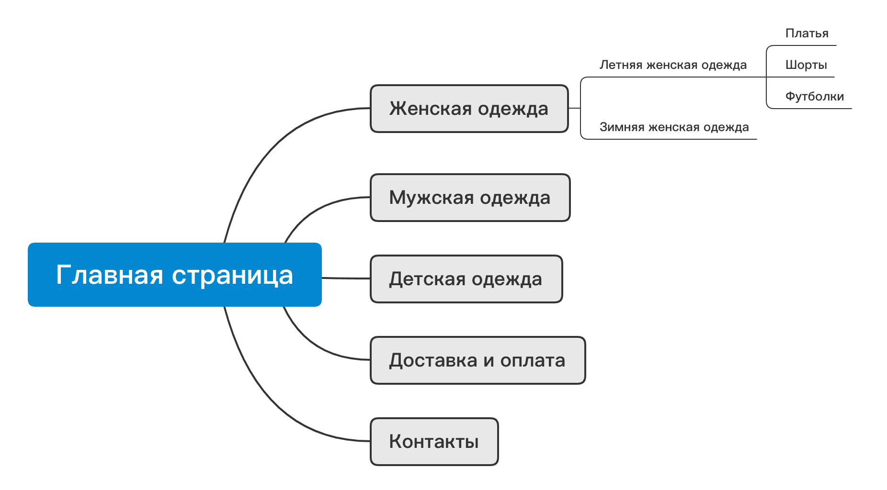
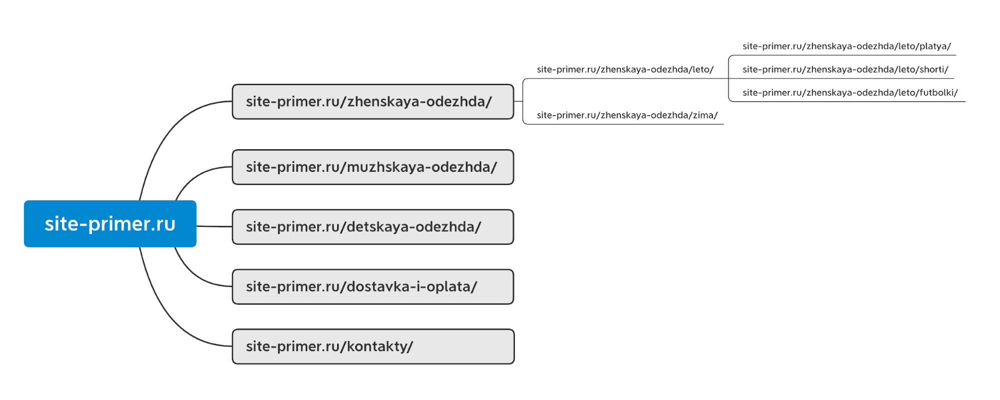

Определение структуры сайтов
Что такое структура сайта
Структура сайта — это логичная взаимосвязь между страницами сайта, их иерархия. Проще всего объяснить понятие «структуры» можно схематически. Представьте, что вы владелец сайта по продаже одежды. У вас есть главная страница и подразделы (женская, мужская, детская одежда, доставка и оплата, контакты). Внутри подразделов есть еще небольшие разделы по сезонам, размерам, конкретным видам одежды, брендам. Упрощенную схему мы показываем ниже.
Структура — это не просто набор страниц. Это именно иерархия от самой главной страницы до небольших подразделов. Структура должна быть логичной и понятной. Общие разделы должны находиться выше по иерархии, более узкие разделы должны входить в общие. Давайте представим примеры адресов страниц (URL) в структуре.
Зачем нужна структура сайта
Действительно, структура играет важную роль в развитии и продвижении веб-проекта. Она нужна, чтобы:
- обеспечить удобную навигацию по сайту;
- увеличить вовлеченность пользователей;
- создать страницы под нужные поисковые запросы;
- представить весь ассортимент товаров в удобном виде;
- продвигать сайт в поисковых системах.